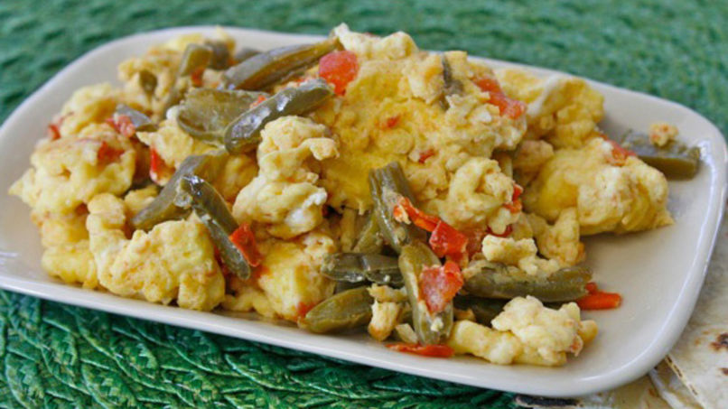

Napoles and Eggs

Ingredients
- 14 oz cactus
- 3-4 roma tomatoes (diced)
- 1 sweet onion (peeled and diced)
- 3 cloves garlic (peeled and diced)
- 2 large eggs
Directions
- Prepare napoles by removing pricklies and root.
Cut into strips, bring to boil and simmer for 15 minutes. Set
aside.
- Saute the onions for 3-5 minutes until translucent. Add garlic and cook for 90 seconds.
- Add tomatoes and salt and pepper for taste. Once liquid evaporates, add napoles
- Prepare the eggs in a seperate bowl using a whisk or fork.
- Cook for 5-7 napoles and add eggs to mix.
- Once eggs are cooked, turn off heat.
- Serve with beans, corn tortillas, tostadas or by iteself.
Home